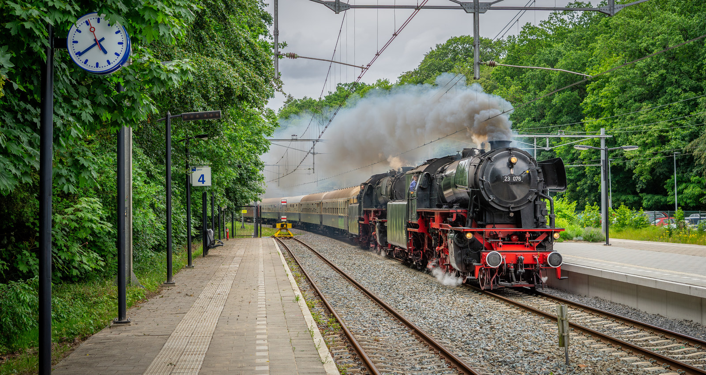

Analyseer je spot
Doelstation is optioneel (voor de doorkomsttijd) en wordt onthouden op dit apparaat.
Plak een spotbericht om het reisoverzicht te genereren.

Wat kan SpotConverter?
Plak een spotbericht uit de WhatsApp-groep en SpotConverter vertaalt het naar route, verwachte doorkomsttijden en een kant-en-klaar groepsbericht. Alles draait in je browser: geen account, geen tracking, en de app werkt ook offline langs de baan.
Spot-analyse
Herkent tijd, station, richting, vervoerder, locnummer en lading in vrije berichttekst — ook spottersafkortingen, NVR-nummers en locaties tussen twee stations.
Doorkomsttijden
Berekend met gemeten snelheden per baanvak en uitgelijnd op de vaste goederenpaden, afgeleid uit ruim een jaar echte groepsspots.
Routekaart
De route op het echte spoornet, met plaatsnamen en — bij een trein die nu rijdt — de geschatte actuele positie.
Groepsradar
Plak een stuk groepschat en zie welke treinen er nu onderweg zijn: meldingen worden automatisch per trein gebundeld, met aftelklok.
Haal ik hem nog?
Eén tik op je locatie en je ziet per station of je de trein nog haalt, per fiets of auto. Je locatie verlaat je apparaat niet.
Werkzaamheden
Loopt de route door een werkgebied (NS-opendata), dan zie je direct dat omleiding of uitval waarschijnlijk is.
Verwachtingsbord
Welke vaste systemen — Katy, PCC, Volvo, Lovosice — rijden vandaag doorgaans, met tijdvenster.
Doelstation-info
Live OV-fietsaantallen en voorzieningen (koffie, toilet, kluizen) van je doelstation.
Groepsbericht
Een bericht volgens de Gouden Formule, met optionele verwachte doorkomst — kopieer of deel direct via WhatsApp. Plus een klassieke doorkomststaat als PDF.